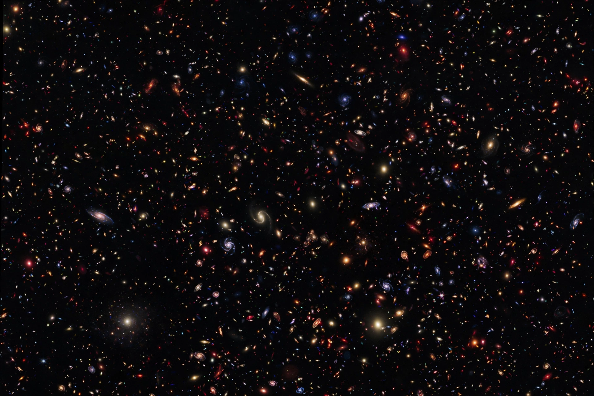

Cosmology

| Cosmology | |
|---|---|
| Field | Astronomy, physics, philosophy |
| Studies | Origin, evolution and fate of the universe |
| Standard model | Lambda-CDM (Big Bang cosmology) |
Cosmology (from the Greek kosmos, "world", and -logia, "study of") is the scientific study of the origin, evolution and ultimate fate of the universe. Physical cosmology is the study of the universe's origin, its large-scale structures and dynamics, and the mechanical laws that govern it, including the formation of the elements, galaxies and the cosmic microwave background. Religious and mythological cosmologies, by contrast, set out belief systems about the creation and ordering of the world.
History
Ancient cosmologies ranged from the geocentric spheres of Aristotle and Ptolemy to sophisticated Babylonian and Indian astronomical cycles. The Scientific Revolution displaced Earth from the centre: Copernicus proposed a heliocentric system, Newton supplied a universal theory of gravitation, and for centuries the universe was assumed to be static and eternal.
Modern physical cosmology began with Einstein's general theory of relativity (1915). In the 1920s Alexander Friedmann and Georges Lemaître derived expanding-universe solutions, and Edwin Hubble's observations of receding galaxies confirmed that the universe is expanding. Lemaître's "primeval atom" became the Big Bang theory, decisively supported by the 1964 discovery of the cosmic microwave background by Arno Penzias and Robert Wilson.
The standard model
The prevailing framework is the Lambda-CDM model: the universe began 13.8 billion years ago in a hot, dense state, underwent a brief epoch of exponential inflation, cooled to form the light elements and then stars and galaxies, and is now expanding at an accelerating rate driven by dark energy, with most of its matter in the form of dark matter. Precision measurements from satellites such as COBE, WMAP and Planck have turned cosmology into a quantitative science.
Open questions
Cosmologists continue to debate the nature of dark matter and dark energy, the cause of inflation, the origin of the matter–antimatter asymmetry, the universe's ultimate fate, and whether the observable universe is part of a larger multiverse.
See also: Timeline of the far future · Cosmogony · Physical cosmology